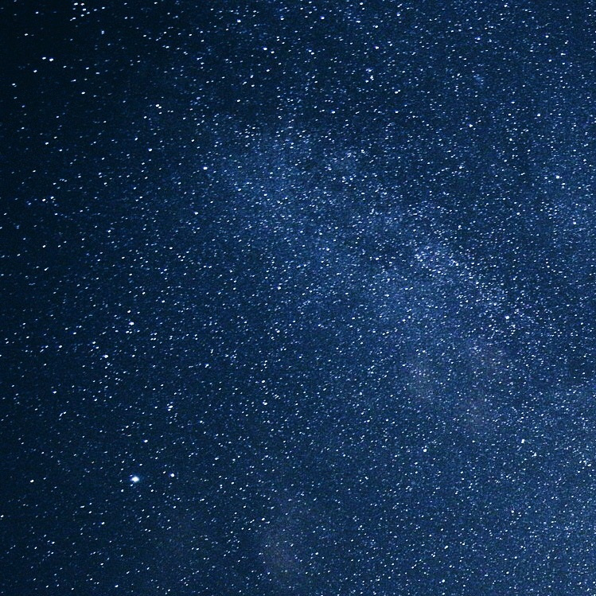
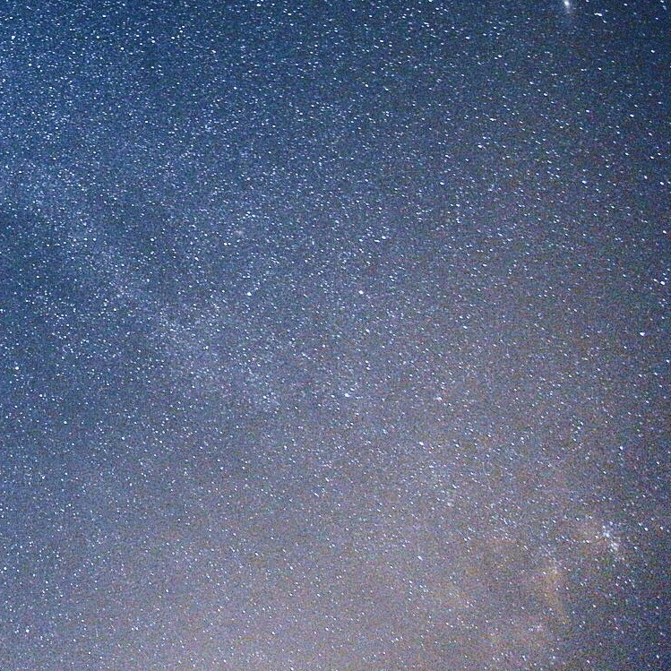
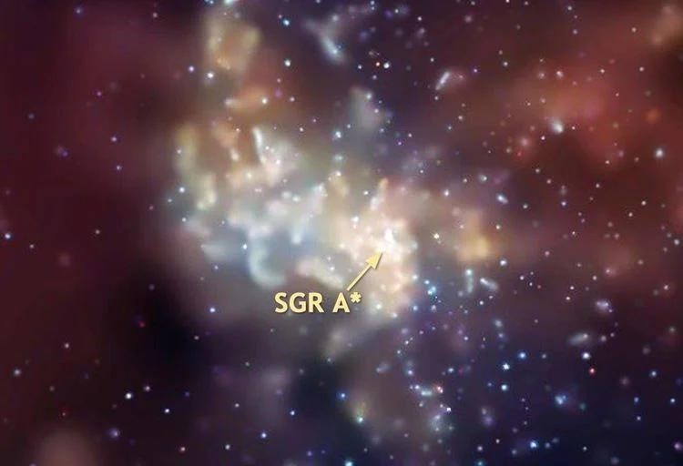

Small But Mighty Stellar Views
 The Milky Way Galaxy is a barred spiral galaxy with an estimated visible diameter of 100,000–200,000 light-years.
 The Solar System is located at a radius of about 27,000 light-years from the Galactic Center, on the inner edge of the Orion Arm, one of the spiral-shaped concentrations of gas and dust.
 Sagittarius A* is a supermassive black hole of 4.100 (± 0.034) million solar masses and is the center of the Milky Way Galaxy.
 Alpha Centauri is a gravitationally bound system of the closest stars and exoplanets to Earth's Solar System at 4.37 light-years (1.34 parsecs) from the Sun.
Alpha Centauri is a gravitationally bound system of the closest stars and exoplanets to Earth's Solar System at 4.37 light-years (1.34 parsecs) from the Sun.